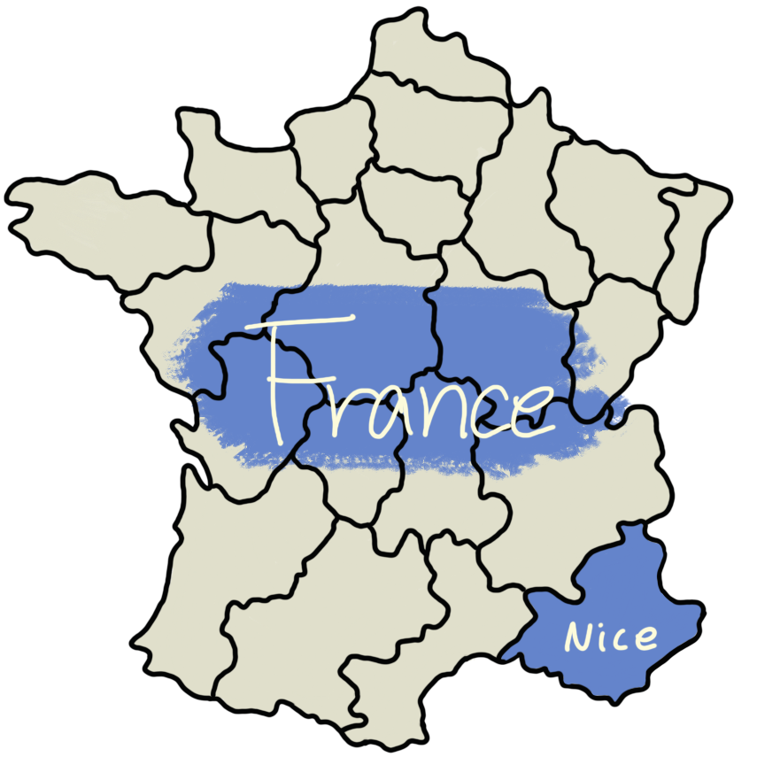

이달의 추천 여행지
France

프랑스 숙소 추천

Waldorf Astoria Versailles - Trianon Palace
REVIEW ⭐⭐⭐⭐⭐
호텔 'Waldorf Astoria Versailles - Trianon Palace'는 저희 WITH SKY와 제휴를 맺은 호텔 중 하나로, 프랑스 숙소를 찾고 있다면 항상 추천드리는 호텔입니다! 5성급 호텔로, 최고급 어매니티가 준비되어 있고, 호텔 시설 역시 손에 꼽을만큼 최고급으로 이루어져있습니다. 프랑스에서 묵을 숙소를 찾고 계신다면 Waldorf Astoria Versailles - Trianon Palace는 어떨까요?
프랑스 맛집 추천
|
Loulou프랑스 파리의 에펠탑, 루브르 박물관 인근에 위치한 현지 맛집으로, 야외와 실내 모두 좌석이 있는 큰 규모의 레스토랑입니다. 루루를 다녀간 관광객들은 루브르 박물관에서 작품들을 관람하고 점심으로 먹기 좋았다고 합니다. 이 식당의 특징은 야외석의 일부를 예약했을 때, 에펠탑을 보며 식사를 할 수 있다는 점입니다. 레스토랑 루루의 메인 메뉴는 바질 새우 파스타와 화덕 피자, 그리고 돼지고기 플래터입니다. 하지만 그 외에도, 시그니처인 문어 요리도 있습니다. 루루에는 단체석이 마련되어 있어, 단체로 예약해 연말 파티나, 기념일 등을 축하하기도 한다고 합니다. 올해 연말에는 프랑스의 유명한 맛집, 루루에서 소중한 사람들과 함께 아름다운 추억을 만들어보는 것은 어떨까요? |


주변 여행지 소개
Nice지중해 연안의 프랑스 도시인 니스는 프로방스알프코트다쥐르 레지옹의 알프 - 마리팀 주에 걸쳐 있습니다. TGV(떼제베, 일종의 기차로 교통수단이다.)가 지나가고, 이탈리아 국경 인근에 위치해 교통의 요지입니다. 기후는 연중 온난하여 바캉스 문화가 발달했고, 프랑스 내에서도 꽤 인지도 높은 휴양지입니다. 프랑스 제 5의 도시로 파리를 위시로 마르세유, 리옹, 툴루즈 순. 그 뒤에는 낭트, 스트라스부르, 릴이 있습니다. 또한, 대한민국에서 이 도시랑 상당히 비슷한 도시가 있는데, 바로 부산, 특히 해운대가 그러하며, 이곳을 방문해본 사람들 또한 해운대와 니스가 비슷하다는 평을 하는 경우가 많습니다. 프랑스에서 지중해의 힐링을 느끼고 싶다면 니스를 방문해보는 것은 어떨까요? |

|